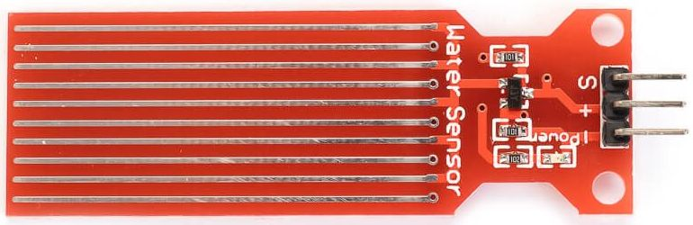
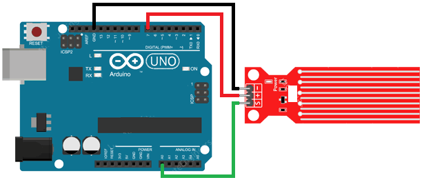

Датчик уровня воды
Датчики воды предназначены для определения уровня воды в различных емкостях, где недоступен визуальный контроль, с целью предупреждения перенаполнения емкости водой через критическую отметку. Данный датчик воды является погружным. Чем больше датчик погружен в воду, тем меньше сопротивление между двумя соседними проводами.
Датчик состоит из десяти открытых медных дорожек, пять из которых являются питающими, а пять – чувствительными.
Эти дорожки чередуются так, что между каждыми двумя питающими дорожками есть одна чувствительная дорожка.
Обычно эти дорожки не соединены между собой, но при погружении они соединяются водой.
Параллельные проводники вместе действует как переменный резистор, сопротивление которого изменяется в зависимости от уровня воды. Сопротивление обратно пропорционально высоте воды:
- чем больше воды, в которую погружен датчик, тем лучше проводимость, и тем ниже сопротивление;
- чем меньше воды, в которую погружен датчик, тем хуже проводимость, и тем выше сопротивление.
Датчик в соответствии с сопротивлением выдает выходное напряжение, измеряя которое мы можем определить уровень воды.
Датчик имеет три контакта для подключения к контроллеру:
- "+" – питание датчика;
- "—" – земля;
- "S" - аналоговый сигнал.
На вывод S подается аналоговое значение, которое можно передавать в контроллер для дальнейшей обработки. На датчике имеется красный светодиод, сигнализирующих о наличие напряжения питания.

Технические характеристики датчика уровня воды:
- Напряжение питания — 3,3-5 В;
- Ток потребления — 20 мА;
- Выход — аналоговый;
- Зона обнаружения — 16×30 мм;
- Размеры — 62×20×8 мм;
- Рабочая температура — 10 ... 30°С.
Для подключения питания на датчик вывод "+"(VCC) на модуле соединяем с выводом 5V на плате Arduino, а вывод "—" модуля — к выводу GND. Однако при постоянной подаче питания на датчик скорость коррозии значительно увеличивается. Поэтому рекомендуется подавать питание на датчик только тогда, когда снимаются показания. Для этого вывод "+" подключают к цифровому выводу Arduino и устанавливать на нём высокий или низкий логический уровень, когда это необходимо (рис. 2).
Вывод S (Signal) подключают к аналоговому выводу Arduino.

Пример определения уровня воды приведен в скетче №1.
Скетч №1
int Pin_pwr=7; // Вывод подачи питания к датчику int Pin_ur=A0; // Сигнальный вывод int ur = 0;// Переменная для хранения значения уровня воды void setup() { { pinMode(Pin_pwr, OUTPUT); // Настраиваем D7 на выход digitalWrite(Pin_pwr, LOW); // низкий уровень, чтобы отключить питание датчика Serial.begin(9600); } void loop() { { digitalWrite(Pin_pwr, HIGH); // Включить датчик delay(10); // Ждать 10 миллисекунд ur=analogRead(Pin_ur); // Прочитать аналоговое значение от датчика digitalWrite(Pin_pwr, LOW); // Выключить датчик Serial.println(ur); delay(1000); }
Источники
3d-diy.ru - Датчик уровня воды
radioprog.ru - Как работает датчик уровня воды и его взаимодействие с Arduino